<div class="container matterandmaterials"><div id="contents" class="col-md-12 main-content"><span class="ch-nr-3"/>
        <div class="section"><h1 class="title" id="toc-id-0">Chemiese reaksies </h1><div class="teachers-guide">
<p><strong>Hoofstukoorsig</strong></p>

<p>1 week</p>

<p>Hierdie hoofstuk bou voort op die kort inleiding tot chemiese reaksies wat gedek is in Hoofstuk 1 (Atome) van Gr. 8 Materie en Materiale, spesifiek die paragraaf Suiwer Stowwe. Die belangrike boodskap van hierdie hoofstuk is dat atome 'n herrangskikking ondergaan tydens 'n chemiese reaksie. Die atome verander nie, maar hoe hulle gerangskik is met betrekking tot mekaar verander wel. Dit beteken dat die molekules verander, al bly die getal atome van elke soort atoom wat aan die begin van die reaksie teenwoordig is, deurgaans dieselfde. Om leerders te help om hierdie belangrike konseptuele konneksie te maak, word deeltjiediagramme gebruik om sommige van die reaksies in hierdie hoofstuk te verteenwoordig. Leerders sal ook die kans kry om self sulke diagramme te teken in die aktiwiteite en die hersieningsvrae van die hoofstuk.</p>

<p/>

<p>Die aktiwiteit 'Kan ons 'n chemiese reaksie gebruik om binne-in 'n eier te sien?' neem 'n paar dae. Dit word voorgestel dat jy tydens die eerste les van hierdie hoofstuk daarmee begin. Dit sal help om aan die leerders te wys dat chemiese verandering gewoonlik waarneembaar is op die makrosopiese skaal en dat sulke waarnemings bewys verskaf van aktiwiteit op die vlak van deeltjies.</p>

<p/>

<p>Dit is ook wys om die kalkwater wat vir die ondersoek 'Kan helder kalkwater gebruik word om die teenwoordigheid van koolstofdioksied  aan te dui?' voor die aanvang van hierdie hoofstuk te berei. Om helder kalkwater te berei, volg die instruksies hieronder:</p>

<p/>

<p><u>Instruksies vir die bereiding van helder kalkwater</u></p>
<ul data-class="ListBulleted"><li>
<p>Plaas 'n paar eetlepels kalsiumhidroksied, Ca(OH)<sub>2</sub>, in 'n helder 500 ml reagensbottel en skud of roer om 'n troebel suspensie te maak.</p>
</li>
<li>
<p>Laat die suspensie vir 'n paar dae staan om uit te sak. Die helder oplossing bo die vaste Ca(OH)<sub>2</sub> is 'n versadigde oplossing van Ca(OH)<sub>2</sub>, ook bekend as kalkwater.</p>
</li>
<li>
<p>Dekanteer versigtig soveel hiervan as wat nodig is sonder om die Ca(OH)<sub>2</sub> neerslag op die bodem te versteur.</p>
</li>
<li>
<p>Om nog meer te maak, voeg eenvoudig nog water by, skud, en laat dit weer uitsak. As die neerslag oplos, voeg nog vaste Ca(OH)<sub>2</sub> by.</p>
</li>
</ul><p/>

<p>3.1 Hoe weet ons 'n chemiese reaksie het plaasgevind? (1.5 uur)</p>

<p/>
<table><tr><td><p><strong>Take</strong></p></td><td><p><strong>Vaardighede</strong></p></td><td><p><strong>Aanbeveling</strong></p></td></tr><tr><td><p>Aktiwiteit: Die verskil tussen chemiese en fisiese veranderinge</p></td><td><p>Opsporing en herroeping van inligting, sortering en klassifisering.</p></td><td><p>Voorgestel</p></td></tr><tr><td><p>Aktiwiteit: Kan ons 'n chemiese reaksie gebruik om binne-in 'n eier te sien?</p></td><td><p>Waarneming, optekening van inligting, teken en etikettering, interpretasie</p></td><td><p>CAPS voorstel</p></td></tr></table><p/>

<p>3.2 Reaktante en produkte (1.5 uur)</p>

<p/>
<table><tr><td><p><strong>Take</strong></p></td><td><p><strong>Vaardighede</strong></p></td><td><p><strong>Aanbeveling</strong></p></td></tr><tr><td><p>Aktiwiteit: Analisering van die eierdop-eksperiment</p></td><td><p>Interpretasie, verduideliking van chemiese reaksie</p></td><td><p>CAPS voorstel</p></td></tr><tr><td><p>Aktiwiteit: Ondersoek van 'n gistingsreaksie</p></td><td><p>Opsporing en herroeping van inligting, interpretasie</p></td><td><p>Opsioneel</p></td></tr><tr><td><p>Aktiwiteit: Sommige reaksies van Lewe en Leef</p></td><td><p>Opsporing en herroeping van inligting</p></td><td><p>CAPS voorstel</p></td></tr><tr><td><p>Aktiwiteit: Loopbane in chemie</p></td><td><p>Opsporing en herroeping van inligting, navorsing, lees- en skryfwerk, kommunikasie</p></td><td><p>Opsioneel</p></td></tr></table><p/>
</div>
<p/>
<div class="note col-md-10" data-type="keyquestions"><ul data-class="ListBulleted"><li>Wat is 'n chemiese reaksie?</li>
<li>Wat gebeur met atome en die bindings tussen hulle tydens 'n chemiese reaksie?</li>
<li>Hoe kan ons die reaktante en die produkte in 'n reaksie identifiseer?</li>
<li>Watter voorbeelde van chemiese reaksies bestaan daar onder inheemse praktyke?</li>
</ul></div>
<p/>

<p>In die vorige hoofstuk het ons gekyk na die deeltjiemodel van materie en spesifiek na toestandveranderinge. Onthou jy dat daar gekyk is na die verhitting en daarna verkoeling van kerswas om te sien hoe dit smelt en dan weer 'n vaste stof word? Hierdie is <strong>fisiese</strong> veranderinge. Die chemiese eienskappe van die stof verander nie.</p>

<p/>

<p>Ons gaan nou kyk wat gebeur wanneer <strong>chemiese</strong> veranderinge in stowwe plaasvind tydens <strong>chemiese reaksies.</strong></p>

<p/>
<div class="section"><h2 class="title" id="toc-id-1">Hoe weet ons dat 'n chemiese reaksie plaasgevind het?</h2>
<p/>
<div class="note col-md-6" data-type="newwords"><ul data-class="ListBulleted"><li>chemiese reaksie</li>
<li>reaksiefles of reaksievat</li>
</ul></div>
<p/>

<p>Gedurende chemiese reaksies verander een of meer stowwe in 'n nuwe stof. Weet jy van enige chemiese reaksies? Kan jy een of twee voorbeelde noem? </p><hr/><div class="teachers-guide">
<p>Leerders mag dalk onthou dat die roes van yster 'n chemiese reaksie is, of hulle kan dalk sommige van die voorbeelde van Hoofstuk 1 as voorbeelde noem. Hulle kan dalk ook 'toestandverandering' as 'n voorbeeld noem. Dit is egter NIE 'n chemiese verandering of reaksie nie. Verduidelik aan die leerders dat dit 'n fisiese en nie 'n chemiese reaksie is nie.</p>
</div>
<p/>

<p>Hoe weet ons dat 'n chemiese reaksie tans plaasvind? Wat is die  tekens? </p><hr/><hr/><div class="teachers-guide">
<p>Vra die leerders om hierdie vrae vir 'n paar minute in kleingoepe te bespreek. Maak 'n lys op die bord van hulle voorstelle. Dit kan insluit:</p>
<ul data-class="ListBulleted"><li>Die mengsel kan verander en verskillend voorkom. (Op watter manier? Daar mag 'n kleurverandering wees en borreltjies of 'kristalle' mag dalk vorm.)</li>
<li>Daar kan dalk 'n ontploffing plaasvind.</li>
<li>Die mengsel se temperatuur kan dalk verander - dit kan warm of koud word. Dit moet nie verwar word met    fisiese veranderinge wat met verhitting of afkoeling saamgaan nie (smelting en stolling).</li>
</ul></div>
<p/>

<p>Ons kan vasstel dat 'n chemiese verandering plaasgevind het as een of meer van die volgende dinge gebeur:</p>
<ul data-class="ListBulleted"><li>
<p>Daar was 'n kleurverandering binne-in die <strong>reaksiefles</strong>.</p>
</li>
<li>'n Gas het gevorm. Gewoonlik weet ons 'n gas het gevorm wanneer ons borreltjies kan sien. Maar dit moet nie verwar word met kook nie, dit is wanneer 'n vloeistof verhit word tot by sy kookpunt.</li>
<li>'n Vaste stof het gevorm. Gewoonlik weet ons dat 'n vaste stof gevorm het wanneer ons 'n modderige of troebel neerslag sien, of kristalle wat vorm.</li>
</ul><p/>
<div class="teachers-guide">
<p>Die meeste handleidings vir inleidende chemie noem net die drie maniere hierbo genoem as teken dat 'n reaksie plaasgevind het. Maar die nie-sigbare tekens hieronder is ook die moeite werd om genoem te word.</p>
</div>
<p/>

<p>Al die tekens hierbo genoem is visueel, dit is deur die oog waargeneem. Ander sintuie kan ons ook help om te besluit of 'n chemiese reaksie plaasgevind het:</p>
<ul data-class="ListBulleted"><li>Soms kan chemiese veranderinge deur die reuksintuig waargeneem word, veral as 'n nuwe stof met 'n skerp reuk vrygestel word.</li>
<li>Ander chemiese veranderinge kan gevoel word, byvoorbeeld wanneer 'n reaksie hitte vrystel.</li>
<li>Sommige chemiese veranderinge kan weer gehoor word, bv. wanneer 'n ontploffing plaasvind.</li>
</ul><p/>
<div class="note col-md-6" data-type="visit">
<p>Video oor fisiese en chemiese veranderinge.<iframe width="420" height="315" src="http://www.youtube.com/embed/X328AWaJXvI"></iframe></p>
</div>
<p/>
<div class="activity" data-type="Activity"><h1 class="title">Die verskil tussen fisiese en chemiese veranderinge</h1><div class="teachers-guide">
<p>Hierdie is 'n kort aktiwiteit om seker te maak dat leerders die verkil verstaan tussen fisiese en chemiese veranderinge, en maak van voorbeelde uit die alledaaglikse lewe gebruik.</p>
</div>
<p/>

<p><strong>INSTRUKSIES:</strong></p>
<div class="exercises"><div class="problemset"><div class="entry"><div class="problem">Hieronder is 'n tabel waarin verskillende chemiese en fisiese veranderinge gelys is.</div><div class="solution">
<p/><p/>
</div></div><div class="entry"><div class="problem">
<p/>

<p>Jy moet besluit of 'n verandering fisies of chemies is en die antwoord in die laaste kolom skryf.</p>

        <table><tr><td><p><strong>Verandering</strong></p></td><td><p><strong>Is dit 'n fisiese of chemiese verandering?</strong></p></td></tr><tr><td><p>Opsny van aartappels in blokkies</p></td><td><p/></td></tr><tr><td><p>Kook van water in 'n pot op die stoof</p></td><td><p/></td></tr><tr><td><p>Bak van eiers in 'n pan</p></td><td><p/></td></tr><tr><td><p>Klits van eierwitte</p></td><td><p/></td></tr><tr><td><p>Oplos van suiker in water</p></td><td><p/></td></tr><tr><td><p>Verbranding van gas in 'n gasstofie</p></td><td><p/></td></tr><tr><td><p>Jou roomys smelt in die son</p></td><td><p/></td></tr><tr><td><p>Melk wat suur word</p></td><td><p/></td></tr><tr><td><p>'n Ysterhek buite roes</p></td><td><p/></td></tr></table></div><div class="solution">
<p/><p>Hier is die antwoorde. Leerders hoef slegs fisies of chemies te antwoord - sommige verduidelikings word gegee as agtergrond vir die onderwyser indien dit aan die leerders verskaf wil word.</p>

        <table><tr><td><p><strong>Verandering</strong></p></td><td><p><strong>Is dit 'n fisiese of chemiese verandering?</strong></p></td></tr><tr><td><p>Opsny van aartappels in blokkies</p></td><td><p>Fisies</p></td></tr><tr><td><p>Kook van water in 'n pot op die stoof</p></td><td><p>Fisies</p></td></tr><tr><td><p>Bak van eiers in 'n pan</p></td><td><p>Chemies (die eier se prote&#239;ne ondergaan 'n chemiese verandering en vorm 'n netwerk deur kruisbindings te maak)</p></td></tr><tr><td><p>Klits van eierwitte</p></td><td><p>Fisies (lug word in die vloeistof ingeforseer maar geen nuwe stof word gevorm nie)</p></td></tr><tr><td><p>Oplos van suiker in water</p></td><td><p>Fisies (die suikerkorreltjies (kristalletjies) word in die water opgebreek en versprei daarin), maar die individuele molekules is onveranderd</p></td></tr><tr><td><p>Verbranding van gas in 'n gasstofie</p></td><td><p>Chemies (waterdamp en koolstofdioksied vorm)</p></td></tr><tr><td><p>Jou roomys smelt in die son</p></td><td><p>Fisies</p></td></tr><tr><td><p>Melk wat suur word</p></td><td><p>Chemies (melksuur word gevorm)</p></td></tr><tr><td><p>'n Ysterhek buite roes</p></td><td><p>Chemies (ysteroksied vorm - dit word in groter besonderhede in Gr. 9 bespreek)</p></td></tr></table><p/>
</div></div></div></div>

<p/>
</div>

<p/>

<p>Ons sal nou ons kontrolelys vir iets prakties aanwend deur 'n reaksie te ondersoek wat veilig genoeg is om tuis te probeer. Het jy al ooit gewonder hoe 'n rou eier sonder sy dop sal lyk?
Ons gaan 'n chemiese reaksie gebruik om die dop van die eier te verwyder sonder om die eier te breek!</p>

<p/>
<div class="activity" data-type="Activity"><h1 class="title">Kan ons 'n chemiese reaksie gebruik om binne-in 'n eier te kyk?</h1><figure>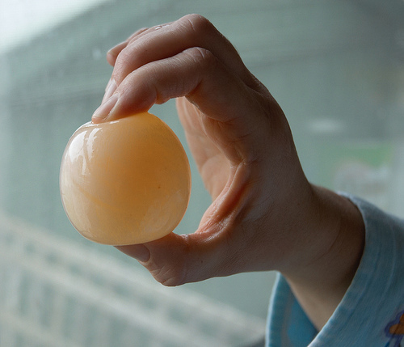<figcaption class="caption">Hoe kan ons 'n eier so laat lyk?<a href="http://www.flickr.com/photos/gemsling/2687069763/"> http://www.flickr.com/photos/gemsling/2687069763/ </a></figcaption></figure><p/>
<div class="teachers-guide">
<p>Begin so vroeg as moontlik met hierdie aktiwiteit, omdat dit 'n paar dae neem vir die dop van die eier om heeltemal op te los. Dit is waarskynlik wys om die reaksie in duplikaat te doen ingeval daar met die eksperiment iets verkeerd gaan. Die eier is baie delikaat sonder sy dop en mag dalk breek; dit sal dan goed wees om 'n ekstra eier te h&#234;.</p>
</div>
<p/>
<div class="note col-md-6" data-type="visit">
<p>Video oor die kaal eier eksperiment<iframe width="420" height="315" src="http://www.youtube.com/embed/vyOnGA0cmp0"></iframe></p>
</div>
<p/>

<p><strong>MATERIALE:</strong></p>
<ul data-class="ListBulleted"><li>eiers</li>
<li>'n glas</li>
<li>wit asyn</li>
</ul><p/>

<p><strong>INSTRUKSIES:</strong></p>
<div class="exercises"><div class="problemset"><div class="entry"><div class="problem">Plaas die eier versigtig in die glas. Sorg dat die dop nie gekraak word nie.</div><div class="solution">
<p/><p/>
</div></div><div class="entry"><div class="problem">
<p/>

<p>Bedek die eier met die asyn. Wag vir 'n paar minute. Kan jy sien of iets op die oppervlak van die eier se dop gebeur?</p>

	  <ol data-class="ListEnumerated"><li>Skryf jou waarnemings hieronder.
<p/>

<p/><hr/></li>
<li>Waarvan is hierdie waarneming 'n teken? 
<p/>

<p/><hr/></li>
</ol></div><div class="solution">
<p/><p/>

        <ol data-class="ListEnumerated"><li>Die eier word gaandeweg deur 'n lagie borrels bedek.</li>
<li>
<p/>

<p>Die borrels is 'n teken dat 'n chemiese reaksie plaasvind.</p>
</li>
</ol><p/>
</div></div><div class="entry"><div class="problem">Los die eier vir 4-5 dae in die asyn. Daarna moet jy die res van die aktiwiteit voltooi.</div><div class="solution">
<p/><p><strong>Let op:</strong>Dit mag nodig wees om die asyn aan te vul as die reaksie stadiger begin verloop. Onthou om aan die einde van die week weer aan die aktiwiteit aandag te gee wanneer die eierdop totaal opgelos het.</p>
</div></div><div class="entry"><div class="problem">Na 4 tot 5 dae, ondersoek die eier in die asyn en teken jou waarnemings aan.
<p/>

<p/><hr/><hr/></div><div class="solution">
<p/><p>Daar is 'n skuimagtige, bruin laag wat op die asyn dryf.</p>
</div></div><div class="entry"><div class="problem">
<p/>

<p>Skep die eier versigtig uit die asyn met 'n groot lepel. Raak aan die oppervlak van die eier. Skryf jou waarnemings hieronder. Wat het gebeur?</p>

<p/><hr/><hr/></div><div class="solution">
<p/><p>Die eier voel sag en wiebelig. Die dop het verdwyn omdat dit opgelos het. In die plek daarvan is 'n poeieragtige lagie.</p>
</div></div><div class="entry"><div class="problem">Vryf die poeieragtige lagie van die eier af en plaas dit in 'n bietjie skoon water. Hoe lyk dit nou? 
<p/>

<p/><hr/><hr/></div><div class="solution">
<p/><p>Die eier het sy dop verloor en ons kan die eier se wit en die eiergeel binne-in sien.</p>
</div></div><div class="entry"><div class="problem">Teken en maak byskrifte van die inhoud van die glas voor en na die reaksie. 
<p/>

<p><br/><br/><br/><br/><br/><br/><br/><br/></p>
 </div><div class="solution">
<p/><p>Die leerders moet sketse maak van die eksperiment aan die begin en die einde. Die eerste skets moet die heel eier, met helder asyn bedek, in die glas toon. Die tweede skets moet die deursigtige eier, met die eiergeel duidelik gemerk, en bedek deur helder asyn met bo-op 'n bruin lagie drywende materiaal aantoon.</p>
</div></div></div></div>

<p/>

<p><strong>VRAE:</strong></p>
<div class="exercises"><div class="problemset"><div class="entry"><div class="problem">Watter tekens het jy gesien wat aandui dat 'n chemiese reaksie plaasgevind het. 
<p/>

<p/><hr/><hr/><hr/></div><div class="solution">
<p/><p>Die eier lyk anders. Ons het ook borrels op die eierdop gesien en agterna was daar 'n skuimagtige laag wat op die asyn dryf.</p>
</div></div><div class="entry"><div class="problem">Skryf 'n kort paragraaf om te verduidelik wat met die eierdop gebeur. 
<p/>

<p/><hr/><hr/><hr/></div><div class="solution">
<p/><p>Die leerders se paragraaf moet ten minste die volgende idees bevat:</p>

        <ul data-class="ListBulleted"><li>Die eierdop het gereageer met die asyn en is 'weggevreet'.</li>
<li>Die eierdop het in die asyn opgelos.</li>
<li>Die stowwe in die eierdop het 'n chemiese verandering ondergaan. Hulle het verander in nuwe stowwe.</li>
</ul><p/>
</div></div></div></div>

<p/>
</div>

<p/>
<div class="note col-md-6" data-type="didyouknow">
<p>Bene, tande en p&#234;rels sal almal in asyn oplos, net soos met die eierdop gebeur het, maar dit kan veel langer neem.</p>
</div>
<p/>

<p>Hoe is dit moontlik om een verbinding in 'n ander te verander? Wat gebeur met die deeltjies wanneer verbindings reageer? In die volgende afdeling word hierdie vrae beantwoord.</p>

<p/></div><div class="section"><h2 class="title" id="toc-id-2">Reaktante en produkte</h2>
<p/>
<div class="note col-md-6" data-type="newwords"><ul data-class="ListBulleted"><li>reaktant</li>
<li>produk</li>
<li>chemiese vergelyking</li>
<li>ko&#235;ffisi&#235;nte</li>
<li>gisting</li>
</ul></div>
<p/>

<p>In Hoofstuk 1 het ons geleer dat verbindings gevorm word deur chemiese reaksies. Kan jy onthou wat 'n verbinding is? Skryf hier 'n definisie. </p><hr/><hr/><div class="teachers-guide">
<p>'n Verbinding is 'n soort stof wat bestaan uit atome van twee of meer elemente wat chemies aan mekaar verbind is in 'n vaste verhouding. Moedig jou leerders aan om hiervan 'n aantekening in die kantlyn van hulle werkboek te maak.</p>
</div>
<p/>

<p>Skryf die formules van drie verskillende verbindings neer. </p><hr/><div class="teachers-guide">
<p>Leerlingafhanklike antwoord. H<sub>2</sub>O, CO<sub>2</sub>, NaCl, ens.</p>
</div>
<p/>
<div class="activity" data-type="Activity"><h1 class="title">Analise van die eierdop-eksperiment</h1>
<p/>

<p>In die eierdop aktiwiteit het die kalsiumkarbonaat in die eierdop gereageer met asynsuur en is kalsiumasetaat, koolstofdioksied en water gevorm.</p>

<p/>

<p>Ons kan hierdie  <strong>chemiese vergelyking</strong> soos volg skryf:</p>

<p>eierdop + asyn &#8594; kalsiumasetaat + koolstofdioksied + water</p>

<p/>

<p><strong>VRAE:</strong></p>
<div class="exercises"><div class="problemset"><div class="entry"><div class="problem">
<p>Daar is twee beginstowwe <strong>voor</strong> die reaksie plaasvind.</p>

<p/><hr/></div><div class="solution">
<p/><p>Die eierdop (kalsiumkarbonaat) en asyn (asynsuur)</p>
</div></div><div class="entry"><div class="problem">
<p>Dar is drie stowwe teenwoordig <strong>na</strong> die reaksie. Watter is hulle?</p>

<p/><hr/></div><div class="solution">
<p/><p>Hulle is kalsiumasetaat, koolstofdioksied en water.</p>
</div></div><div class="entry"><div class="problem">Wat is die chemiese formules vir die verbindings water en koolstofdioksied? 
<p/>

<p/><hr/></div><div class="solution">
<p/><p>Water is H<sub>2</sub>O en koolstofdioksied is CO<sub>2</sub>.</p>
</div></div><div class="entry"><div class="problem">
<p/>

<p>Ons noem die stowwe wat teenwoordig is voor die reaksie plaasgevind het, die <strong>reaktante</strong>. Wat is die reaktante in die eierdop-eksperiment? </p><hr/></div><div class="solution">
<p/><p>Die eierdop (kalsiumkarbonaat) en asyn (asynsuur)</p>
</div></div><div class="entry"><div class="problem">Wat dink jy het met die reaktante gebeur in hierdie chemiese reaksie?  
<p/>

<p/><hr/></div><div class="solution">
<p/><p>Gebruik hierdie vraag om die leerders se begrip tot dusver te assesseer. Hulle behoort te kan s&#234; dat die reaktante gebruik word om die produkte te skep.</p>
</div></div><div class="entry"><div class="problem">
<p>Ons noem die stowwe wat tydens die chemiese reaksie geproduseer word, die <strong>produkte</strong>. Wat is die produkte in die eierdop-eksperiment?</p>

<p/><hr/></div><div class="solution">
<p/><p>Hulle is kalsiumasetaat, koolstofdioksied en water.</p>
</div></div></div></div>

<p/>
</div>

<p/>

<p>Tydens 'n chemiese reaksie word die reaktante gebruik om die produkte te vorm. Die atome in die reaktante word herrangskik in nuwe verbindings (die produkte).</p>

<p/>
<div class="note col-md-6" data-type="visit">
<p>'n Simulasie in verband met reaktante, produkte en oorblyfsels<a data-class="ExternalLink" href="http://phet.colorado.edu/en/simulation/reactants-products-and-leftovers"> http://phet.colorado.edu/en/simulation/reactants-products-and-leftovers</a></p>
</div>
<p/>
<div class="teachers-guide">
<p>Onderwyser se gids vir die PhET simulasie in die besoek kassie. <a data-class="ExternalLink" href="http://phet.colorado.edu/files/teachers-guide/reactants-products-and-leftovers-guide.pdf"> http://phet.colorado.edu/files/teachers-guide/reactants-products-and-leftovers-guide.pdf</a> Simulasie is 'n kragtige hulpmiddel en ons moedig onderwysers sterk aan om hulle te gebruik indien die internet beskikbaar is, of om leerders aan te moedig om met hulle buite die klas te eksperimenteer. Leerders kan ook die webwerf op hulle selfone besoek deur die bit.ly webskakel in die adresveld in te tik.</p>
</div><div class="section"><h3 class="title" id="toc-id-3">'n Chemiese reaksie is 'n herrangskikking van atome</h3>
<p/>
<div class="teachers-guide">
<p>Kry die leerders om hierdie reaksies self op hul lessenaars voor hulle te doen deur krale/ertjies/lensies/balle te gebruik, en die 'atome' te herrangskik om produkte te vorm.</p>
</div>
<p/>

<p>Ten einde 'n verbinding na 'n ander verbinding om te skakel, moet ons die manier waarop die atome in the verbinding gerangskik is, verander. Dit is presies wat 'n chemiese reaksie is: die herrangskikking van atome om een of meer verbindings na nuwe verbindings om te skakel.</p>

<p/>

<p>Wanneer atome van mekaar af geskei word en in nuwe kombinasies van atome herkombineer, s&#234; ons dat 'n chemiese reaksie plaasgevind het.</p>

<p/>

<p>Ons gaan gekleurde sirkels gebruik om die atome in die verbindings wat aan chemiese reaksies deelneem, voor te stel.</p>

<p/>
<figure id="gd-idp1561120"></figure><p/>

<p>Ons het koolstof en suurstof (links van die pyltjie), wat reageer om koolstofdioksied (regs van die pyltjie) te vorm.</p>

<p/>

<p>Links van die pyltjie het ons die 'vooraf' situasie. Hierdie kant stel die stowwe voor wat ons het voordat die reaksie plaasvind. Hulle word die <strong>reaktante</strong> genoem.</p>

<p/>

<p>Regs van die pyltjie het ons die 'na' situasie. Hierdie kant stel die stowwe voor wat ons het nadat die reaksie plaasvind het. Hulle word die <strong>produkte</strong> genoem.</p>

<p/>

<p>REAKTANTE (voor die reaksie) &#8594; PRODUKTE (na die reaksie)</p>

<p/>

<p>Sien jy hoe die atome geherrangskik is? Dit beteken dat 'n chemiese reaksie plaasgevind het. Gee byskrifte in die diagram vir 'reaktante' en 'produk'</p>

<p/>

<p>Die reaksie tussen koolstof en suurstof vind plaas wanneer ons steenkool verbrand. Steenkool is koolstof, en wanneer dit in suurstofgas brand, word koolstofdioksied gevorm.</p>
<figure><figcaption class="caption">Brandende steenkool.<a href="http://www.flickr.com/photos/cote/66570391/"> http://www.flickr.com/photos/cote/66570391/ </a></figcaption></figure><p/>

<p>Die diagram hieronder stel 'n ander chemiese reaksie voor. Ons het suurstof (voorgestel deur rooi sirkels) wat met waterstof (voorgestel deur wit sirkels) reageer om water te vorm.</p>

<p/>

<p/>
<figure id="gd-idp3244144">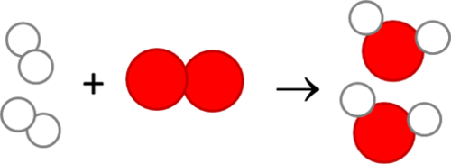</figure><p>Wat is die reaktante in hierdie reaksie? </p><hr/><div class="teachers-guide">
<p>Suurstof en waterstof.</p>
</div>
<p/>

<p>Wat is die produk in hierdie reaksie? </p><hr/><div class="teachers-guide">
<p>Water.</p>
</div>
<p/>

<p>Waarom dink jy dat waterstof en suurstof elkeen voorgestel word as twee atome wat saamgevoeg is? </p><hr/><div class="teachers-guide">
<p>Hierdie hou verband met wat leerders in Hoofstuk 1 oor diatomiese molekule geleer het. Hierdie elemente bestaan as diatomiese molekule, en dus het hulle twee atome wat saamgebind is.</p>
</div>
<p/>

<p>Onthou jy dat ons in Hoofstuk 1 gepraat het van <strong>chemiese bindings</strong> tussen atome in 'n molekule? 'n Chemiese binding is 'n krag wat atome bymekaar hou. Dus moet die bindings tussen atome tydens 'n chemiese reaksie breek sodat die atome kan herrangskik om nuwe produkte te vorm. Nuwe bindings vorm tussen the atome in die produk.</p>

<p/>

<p>Volgende gaan ons kyk na 'n chemiese reaksie wat die mensdom al vir eeue lank gebruik.</p>

<p/></div><div class="section"><h3 class="title" id="toc-id-4">Fermentasie is 'n chemiese reaksie</h3>
<p/>

<p>Het jy al ooit melk of sap in 'n bottel vergeet, en 'n paar dae later gevind dat dit 'sleg geraak' het? As jy die per ongeluk geproe het, mag dit suur geproe het, en in die geval van sap dalk ook effens bruisend. Jou sintuie mag jou gewaarsku het om nie meer daarvan te drink nie. Onthou jy dat jy in Gr.7 geleer het dat ons smaaksintuig ons beskerm teen kos wat sleg geword het?</p>

<p/>

<p>Die suur smaak van die melk of sap word veroorsaak deur die produkte van <strong>gisting</strong>. Watter verbindings het 'n suur smaak? </p><hr/><div class="teachers-guide">
<p>Sure proe suur.</p>
</div>
<p/>

<p>Fermentasie lewer nie net ongewenste produkte nie. Jogurt, karringmelk en kaas is almal gefermenteerde melkprodukte. In hierdie voorbeelde vorm die fermentasieproses sure wat hierdie kossoorte 'n suur smaak gee.</p>

<p/>
<figure>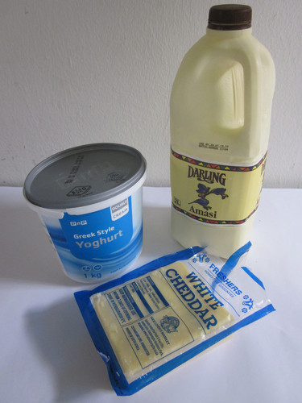<figcaption class="caption">Verskillende suiwelprodukte wat gemaak word met behulp van fermentasie.</figcaption></figure><p/>

<p>Fermentasie is ook die proses wat gebruik kan word om alkohol uit 'n verskeidenheid vrugte, groentes en graansoorte te maak. In baie kulture is die brou van alkoholiese dranke deel van hulle inheemse kennis.</p>

<p/>
<figure>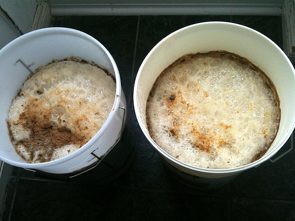<figcaption class="caption">Twee emmers gemmerbier wat fermenteer.<a href="http://www.flickr.com/photos/nikonvscanon/4231775258/"> http://www.flickr.com/photos/nikonvscanon/4231775258/ </a></figcaption></figure><p/>
<div class="note col-md-6" data-type="visit">
<p>Hoe fermentasie werk<iframe width="420" height="315" src="http://www.youtube.com/embed/4SosPuWAg7g"></iframe></p>
</div><div class="teachers-guide">
<p>Die video oor hoe fermentasie werk (5:39) is kort en prettig. Die eerste twee minute gee 'n kort beskrywing. In die res van die video demonstreer die aanbieder hoe om jou eie gemmerbier te maak.</p>
</div>
<p/>
<div class="activity" data-type="Activity"><h1 class="title">Bestudering van die fermentasiereaksie</h1>
<p/>

<p>Die basiese reaksie in die fermentasieproses kan as volg opgesom word:</p>

<p/>

<p>glukose &#8594; alkohol + koolstofdioksied</p>

<p/>

<p>Wat is die reaktante en produkte in hierdie reaksie? </p><hr/><hr/><div class="teachers-guide">
<p>Glukose is die reaktant en alkohol en koolstofdioksied is die produkte.</p>
</div>
<p/>

<p>Ons kan prentjies van die molekule teken om te wys hoe die atome geherrangskik is tydens die reaksie:</p>

<p/>
<figure id="gd-idp7860080">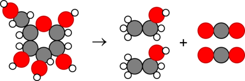</figure><p/>

<p>In die diagram hierbo stel die grys sirkels koolstof (C) voor, die rooi sirkels suurstof (O), en die klein wittes waterstof (H). Skryf die name van die verbindings in hierdie reaksie neer.</p>
<div class="teachers-guide">
<p>Leerders moet glukose aan die linkerkant en alkohol aan die regterkant skryf.</p>
</div>
<p/>

<p>Glukose verander nie vanself na alkohol en koolstofdioksie nie! Mikro&#246;rganismes soos gis en bakterie&#235; fermenteer glukose.</p>

<p/>
<div class="note col-md-6" data-type="didyouknow">
<p>Gis vervaardig spesiale chemikalie&#235; wat ensieme genoem word, en wat die bindings in suikers soos glukose kan afbreek om kleiner molekules soos alkohol en koolstofdioksied te vorm.</p>
</div>
<p/>
<div class="teachers-guide">
<p>Leerders sou bakterie&#235; vir die eerste maal te&#235;gekom het in Gr.7 Lewe en Lewende Dinge, terwyl hulle biodiversiteit en die klassifikasie van organismes bestudeer het. Hulle sal mikro&#246;rganismes in meer detail in Gr. 9 Lewe en Lewende Dinge bestudeer.</p>
</div>
<p/>

<p>In Suid-Afrika is gemmer- of pynapperbier gewilde dranke! Die bruisende borrels in die gemmer- of pynappelbier is koolstofdioksied-borrels wat deur gis gedurende fermentasie gemaak word. Kom ons maak gemmerbier!</p>

<p/>
<div class="teachers-guide">
<p>Hierdie is 'n uitbreidingsaktiwiteit, en kan in die klas gedoen word indien daar tyd is. Dit kan ook gedoen word as 'n <strong>projek.</strong> Ons sal weer volgende termyn in Materie en Materiale na fermentasie kyk. In fermentasie word glukose gedeeltelik afgebreek, en dus lewer dit minder energie (in die vorm van ATP) as respirasie. Fermentasie is ook ana&#235;robies, wat beteken dat dit nie suurstof nodig het nie, terwyl respirasie wel suurstof benodig. Alkohol word gedurende fermentasie vervaardig. <strong>Gemmerbier is egter nie-alkoholies</strong>. Alhoewel dit 'bier' genoem word, is dit nie alkoholies nie, omdat dit nie vir lank genoeg gefermenteer word nie.</p>
</div>
<p/>

<p><strong>INSTRUKSIES:</strong></p>
<ol data-class="ListEnumerated"><li>Jy moet navorsing doen oor hoe tradisionele Suid-Afrikaanse gemmerbier gemaak word.</li>
<li>Identifiseer die verskillende bestanddele wat jy nodig sal h&#234;.</li>
<li>Sodra dit gedoen is, kan julle as klas besluit watter een die beste resep is om te gebruik. Julle kan dan in die klas gemmerbier saam met julle onderwyser maak.</li>
<li>Beantwoord die vrae wat volg. </li>
</ol><p/>
<div class="teachers-guide">
<p>'n Resep vir gemmerbier word hier gegee. Leerders moet ook in groepe hulle eie resep navors, en die beste resep wat hulle het neerskryf. Die onderwyser kan dan &#242;f een van hulle resepte kies om te gebruik, &#242;f di&#233; een wat hier gegee word gebruik, &#242;f die verskillende resepte toets om te bepaal watter een die beste werk.</p>

<p/>

<p>'n Stap-vir-stap gids van hoe om gemmerbier te maak. <a data-class="ExternalLink" href="http://whatsforsupper-juno.blogspot.com/2007/06/old-fashioned-home-made-ginger-beer.html"> http://whatsforsupper-juno.blogspot.com/2007/06/old-fashioned-home-made-ginger-beer.html</a></p>

<p/>

<p><strong>MATERIALE:</strong></p>
<ul data-class="ListBulleted"><li>6 - 8 medium grootte suurlemoene 
<p/>
<ul data-class="ListBulleted"><li>gerasperde skil vanaf 2 suurlemoene</li>
<li>250 ml (1 koppie) vars uitgedrukte suurlemoensap (vanaf omtrent 6 suurlemoene)</li>
</ul></li>
<li>2 duim-grootte vars gemmerstukke</li>
<li>2 teelepels dro&#235; gemmerpoeier</li>
<li>6 rosyntjies</li>
<li>750 ml (3 koppies) wit suiker</li>
<li>5 liters water</li>
<li>1 x 10 g sakkie kits-(aktiewe dro&#235;) gis</li>
<li>rasper</li>
<li>suurlemoendrukker</li>
<li>houer of emmer</li>
<li>houtlepel</li>
<li>groot bottel</li>
<li>etlike kleiner bottels met deksels</li>
<li>ballonne</li>
<li>rekkies</li>
</ul><p/>
</div><div class="teachers-guide">
<p/>

<p><strong>INSTRUKSIES:</strong></p>
<ol data-class="ListEnumerated"><li>Rasper die suurlemoenskil van die 2 suurlemoene in die groot houer of emmer in.</li>
<li>Rasper ook die vars gemmer deur die growwe tande van die rasper te gebruik. </li>
<li>Druk die sap van omtrent 6 suurlemoene uit. Jy sal 250 ml benodig. Voeg die sap by die mengsel. </li>
<li>Voeg die gedroogde gemmer, rosyntjies en suiker by.</li>
<li>Voeg 1 liter warm water (nie kokend) en roer vir omtrent 3 minute totdat die suiker volledig opgelos het.</li>
<li>Voeg nog 4 liter warm water by. Maak seker dat die water koel genoeg is vir jou om jou vinger gemaklik daarin te hou (andersins sal die gis doodgaan!).</li>
<li>Sprinkel die sakkie dro&#235; gis op die water en laat dit vir 'n paar minute staan.</li>
<li>Roer die mengsel met 'n houtlepel.</li>
<li>Skink die vloeistof in 'n groot bottel in, en trek 'n ballon oor die nek van die bottel. Maak die ballon stewig met 'n rekkie aan die nek vas.</li>
<li>Plaas die bottel op 'n warm plek, maar nie in direkte sonlig nie.</li>
<li>Laat dit vir omtrent 4 - 5 ure staan.</li>
<li>Wanneer die rosyntjies bo-op die gemmerbier dryf, is die bier reg om te drink.</li>
<li>Gooi die gemmerbier deur 'n sif. Maak seker dat jy oor 'n wasbak of soortgelyke area werk.</li>
<li>Giet die gemmerbier in skoon glasbottels in, en voeg 'n rosyntjie by elke bottel. Maak seker dat jy nie die bottels heeltemal vul nie, maar laat ten minste 7 - 10 cm tussen die vloeistof en die bokant van die bottel se nek.</li>
<li>Plaas ballonne oor die nekke van helfte van die bottels, en bind hulle met rekkies vas. </li>
<li>Se&#235;l die ander helfte van die bottels deur deksels op hulle vas te draai.</li>
<li>Stoor die bottels weg van hitte of direkte sonlig. (Hulle hoef nie op 'n warm plek te wees nie).</li>
<li>Laat dit oornag vir ten minste 8 ure staan.</li>
<li>Draai die doppies versigtig los. Die gas binne-in sal wil ontsnap, so doen hierdie stadig en versigtig.</li>
</ol><p/>
</div>
<p><strong>VRAE:</strong></p>
<div class="exercises"><div class="problemset"><div class="entry"><div class="problem">Wat is die reaktante in die reaksie om gemmerbier te maak? 
<p/>

<p/><hr/></div><div class="solution">
<p/><p>Die chemiese reaksie vind plaas tussen suiker en fermenterende vrugte en gis. Dus is die reaktante suiker en vrugte (gemmer en rosyntjies).</p>
</div></div><div class="entry"><div class="problem">Wat is die produk van die reaksie wat in die gemmerbier plaasvind? 
<p/>

<p/><hr/></div><div class="solution">
<p/><p>Die produk is koolstofdioksied (en 'n baie klein hoeveelheid alkohol).</p>
</div></div><div class="entry"><div class="problem">Hoekom is daar bruisende borrels in die gemmerbier? 
<p/>

<p/><hr/></div><div class="solution">
<p/><p>Dit is die koolstofdioksied wat in die vloeistof vasgevang was.</p>
</div></div><div class="entry"><div class="problem">Waar dink jy kom die gas vandaan? 
<p/>

<p/><hr/></div><div class="solution">
<p/><p>Dit is die gevolg van die chemiese reaksie tussen die gis, die suiker en die fermenterende vrugte.</p>
</div></div><div class="entry"><div class="problem">Nog 'n voorbeeld van waar ons 'n chemiese reaksie sien plaasvind is wanneer ons hout in 'n vuur verbrand, &#242;f in ons huise &#242;f om kos te kook. Die hout brand en produseer koolstofdioksied en waterdamp. Wat is die produkte en reaktante in hierdie reaksies? 
<p/>

<p/><hr/><hr/></div><div class="solution">
<p/><p>Die reaktante is hout en suurstof, en die produkte is koolstofdioksied en water.</p>
</div></div></div></div>

<p/>
</div></div><div class="section"><h3 class="title" id="toc-id-5">Chemiese reaksies kan ons help om sekere stowwe op te spoor.</h3>
<p/>

<p>Sommige chemiese reaksies kan resultate lewer wat uniek en selfs skouspelagtig is! Het jy al ooit die vulkaaneksperiment gesien? Hierdie eksperiment word in die video-webskakel in die besoek-boksie gewys.</p>

<p/>
<div class="note col-md-6" data-type="visit">
<p>'n Video wat die ammoniumdichromaat-vulkaan wys<iframe width="420" height="315" src="http://www.youtube.com/embed/CW4hN0dYnkM"></iframe></p>
</div>
<p/>

<p>Wanneer ammoniumdichromaat in suurstof brand, veroorsaak die reaksie helder oranje vonke. Die reaksie vorm stikstofgas (N<sub>2</sub>), water en 'n donkergroen verbinding wat chroomoksied genoem word, as produkte. Hierdie is uniek. Slegs ammoniumdichromaat reageer met suurstof om hierdie spesifieke produkte tesame met hierdie spesifieke visuele effekte te vorm.</p>

<p/>
<figure>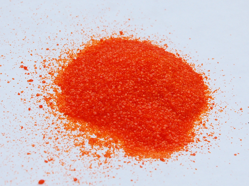<figcaption class="caption">Ammoniumdichromaat voor dit in suurstof gebrand word.</figcaption></figure><figure><figcaption class="caption">Chroomoksied is die produk.</figcaption></figure><p/>

<p>Wanneer twee stowwe op 'n unieke en kenmerkende manier reageer, kan die een gebruik word om die ander <em>te identifiseer</em>.</p>

<p/>
<div class="activity" data-type="Activity"><h1 class="title">'n Paar chemiese reaksies uit Lewe en Lewende Dinge</h1><div class="teachers-guide">
<p>Hierdie aktiwiteit versterk sommige van die konsepte wat in die begin van die jaar  omtrent respirasie en fotosintese in Lewe en Lewende Dinge geleer is. KABV stel voor dat die eksperiment waarin borrels deur kalkwater geblaas word weer gedoen word. Ons het dit hierdie jaar as 'n aktiwiteit in Hoofstuk 1 gedoen, maar dit kan vlugtig hier herhaal word as die leerders dit nie goed kan onthou nie.</p>
</div>
<p/>
<div class="exercises"><div class="problemset"><div class="entry"><div class="problem">
<p/>

<p>Onthou jy dat ons in Hoofstuk 1 Lewe en Lewende Dinge helder kalkwater gebruik het on koolstofdioksied in ons asem waar te neem? Watter kleur het die helder kalkwater geword wanneer ons borrels deur dit geblaas het?</p><hr/><figure id="gd-idp1355920">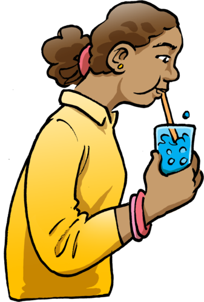</figure></div><div class="solution">
<p/><p>Dit het 'n melkerige wit kleur geword.</p>
</div></div><div class="entry"><div class="problem">Kalkwater is 'n oplossing van kalsiumhidroksied in water. 'n Reaksie vind plaas tussen die kalkwater en die koolstofdioksied om 'n wit stof, wat kalsiumkarbonaat genoem word, in die water te produseer. Wat is die reaktante en produkte in hierdie reaksie? 
<p/>

<p/><hr/><hr/></div><div class="solution">
<p/><p>Die reaktante is kalkwater (kalsiumhidroksied) en koolstofdioksied, en die produkte is kalsiumkarbonaat en water.</p>
</div></div><div class="entry"><div class="problem">Ons s&#234; dat ons die kleurverandering van die kalkwater gebruik het om koolstofdioksied in ons asem te identifiseer of waar te neem. Koolstofdioksied is die byproduk van die chemiese reaksie wat plaasvind tydens respirasie in alle lewende organismes. Skryf 'n woordvergelyking vir respirasie. 
<p/>

<p/><hr/></div><div class="solution">
<p/><p>glukose + suurstof &#8594; energie + koolstofdioksied + water</p>
</div></div><div class="entry"><div class="problem">In Lewe en Lewende Dinge het ons gepraat van die bestanddele van respirasie, omdat ons toe nog nie van die terme reaktant en produk geleer het nie. Wat is die reaktante en wat is die produkte van respirasie? 
<p/>

<p/><hr/><hr/></div><div class="solution">
<p/><p>Die reaktante is glukose en suurstof. Die produkte is energie, koolstofdioksied, en water.</p>
</div></div><div class="entry"><div class="problem">Wat is die reaktante en produkte in fotosintese? 
<p/>

<p/><hr/><hr/></div><div class="solution">
<p/><p>The reaktante is koolstofdioksied en water, die produkte is glukose en suurstof.</p>
</div></div></div></div>

<p/>
</div>

<p/>

<p>Ons het ook geleer dat chemiese reaksies die herrangskikking van atome in molekule is, om nuwe molekule te maak. Dit is wat baie chemici vir 'n lewe doen! Hulle vind metodes om atome te herrangskik om nuwe verbindings maak.</p>

<p/></div><div class="section"><h3 class="title" id="toc-id-6">Beroepe in chemie.</h3><div class="teachers-guide">
<p>Hierdie afdeling is nie vir assesseringsdoeleindes nie, en dus mag dit uitgelaat word. Ons moedig dit egter sterk aan dat die leerders die geleentheid gegee word om die toepassings in die w&#234;reld rondom hulle van wat hulle in die klas leer te ontdek, selfs al is dit as 'n huiswerk oefening. Dit is baie belangrik vir leerders om te besef dat wat hulle in die klas leer ver buite die mure van die klaskamer strek. Moedig hulle aan om weetgierig te wees!</p>
</div>
<p/>

<p>Natuurwetenskappe gaan oor ontdekking! Ons wil jou wys hoe dinge wat jy in die klas bestudeer bruikbaar is in die regte w&#234;reld. Hierdie onderwerp is veels te groot vir ons om alles daaroor op skool te leer. Daar is baie verskillende beroepe wat jy kan kies wat op die wetenskap gegrond is. Wees nuuskierig omtrent die w&#234;reld rondom jou, en verken dit met jou groeiende wetenskapskennis!</p>

<p/>
<div class="note col-md-6" data-type="takenote">
<p>Volgende jaar sal jy die vakke kies wat jy tot Graad 12 sal bestudeer. Sal jy Fisiese Wetenskappe, Lewenswetenskappe en Wiskunde kies? Voordat jy kies watter vakke om te neem, vind uit wat jy na skool met elkeen van hulle kan doen.</p>
</div>
<p/>

<p>Kom ons vind meer uit omtrent die moontlikhede in velde wat verband hou met wat ons in Materie en Materiale bestudeer het.</p>

<p/>
<div class="note col-md-6" data-type="visit">
<p>Die wetenskap is ongelooflik!<a data-class="ExternalLink" href="https://www.facebook.com/ScienceIsSeriouslyAwesome"> https://www.facebook.com/ScienceIsSeriouslyAwesome</a><a data-class="ExternalLink" href="http://io9.com/5815053/science-is-awesome"> http://io9.com/5815053/science-is-awesome</a></p>
</div>
<p/>
<figure>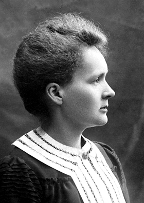<figcaption class="caption">Marie Curie (1867 - 1934) is 'n beroemde chemikus en fisikus, spesifiek ge&#235;er vir haar navorsing op radioaktiwiteit. Sy was die eerste vrou om die Nobelprys te wen, die enigste vrou om dit in twee velde te wen, en die enigste persoon tot dusver om die Nobelprys in meer as een wetenskapsveld te wen!</figcaption></figure><p/>
<div class="teachers-guide">
<p>Baie leerders mag wonder wat die verskil tussen 'n chemikus en 'n chemiese ingenieur is.</p>

<p/>

<p>'n <strong>chemikus</strong> bestudeer die samestelling en eienskappe van materie. Hulle gebruik die kennis wat hulle opdoen om nuwe verbindings, produkte en prosesse om ons daaglikse lewens te verbeter, te ontwikkel. 'n Chemikus benodig 'n omvangryke kennis van chemie, en moet bekwaam wees in die laboratorium. Chemici vors dikwels chemiese reaksies na om nuwe materiale en verbindings te kan vervaardig. Hierdie kan nuwe medisynes, innoverende nuwe boumateriale, nuwe brandstowwe wat omgewingsvriendelik is, en baie ander dinge, insluit. Om nuwe chemiese reaksies na te vors is 'n ingewikkelde proses. Die navorsing van chemiese reaksies word dikwels in spanne saam met ander wetenskaplikes en ingenieurs gedoen.</p>

<p/>

<p>'n <strong>Chemiese ingenieur</strong> is gewoonlik betrokke by die ontwikkeling van metodes om die nuwe verbindings wat die chemikus ontwikkel het op 'n groot skaal te vervaardig, of om maniere te vind om die produksiekoste van daardie verbindings te verlaag. 'n Chemiese ingenieur het 'n algemene kennis van chemie nodig, maar moet ook baie weet van prosesse en wat hulle aandryf.</p>

<p/>

<p>'n Navorser werk om iets nuuts of 'n nuwe manier om dinge te doen te ontdek, terwyl 'n ingenieur die bekende prosesse optimiseer of die beste maniere uitwerk om bekende verbindings te maak.</p>

<p/>

<p><strong>Nooi 'n chemikus/ingenieur uit:</strong> Ken u iemand wat 'n chemikus of 'n chemiese ingenieur is? Miskien is die skool naby 'n universiteit. As dit so is, kan 'n chemikus of chemiese ingenieur uitnooi word om na die skool te kom en met die klas te praat oor die werk wat chemici doen. Alternatiewelik kan die klas dalk 'n chemikus of ingenieur by hul werkplek besoek en hulle vra om die klas rond te wys. Die leerders kan vooraf 'n paar vrae voorberei: hulle kan vra omtrent die werk, wat se soort opleiding nodig is, en wat die eienskappe is wat nodig is om 'n goeie chemikus te word. Onthou net om vooraf 'n afspraak te maak!  Hierdie aktiwiteit kan in 'n klein groepprojek omskep word.  Daar kan van leerders vereis word om 'n kort verslag te skryf van die inligting wat hulle ingesamel het. Dit is nie vir asseseringsdoeleindes nie.</p>

<p/>
</div>
<p/>

<p>Daar is baie, baie toepassings en gebruike van chemie, en baie verskillende beroepe wat op een of ander wyse van chemie gebruik maak. Kom ons vind uit.</p>

<p/>
<div class="activity" data-type="Activity"><h1 class="title">Beroepe in chemie.</h1>
<p/>
<div class="note col-md-6" data-type="visit">
<p>'n Handige webwerf om meer uit te vind omtrent 'n paar chemie-verwante beroepe.<a data-class="ExternalLink" href="http://portal.acs.org/portal/acs/corg/content?_nfpb=true&amp;_pageLabel=PP_SUPERARTICLE&amp;node_id=1188&amp;use_sec=false&amp;sec_url_var=region1&amp;__uuid=964e0712-eaa0-4f2a-a03d-689d0a3cd62c"> http://portal.acs.org/portal/acs/corg/content?_nfpb=true&amp;_pageLabel=PP_SUPERARTICLE&amp;node_id=1188&amp;use_sec=false&amp;sec_url_var=region1&amp;__uuid=964e0712-eaa0-4f2a-a03d-689d0a3cd62c</a></p>
</div>
<p/>

<p><strong>INSTRUKSIES:</strong></p>
<ol data-class="ListEnumerated"><li>Hieronder is 'n lys van verskillende beroepe wat almal chemie op een of ander manier gebruik. Kyk deur die lys en kies dan die vyf beroepe wat jy die interessantste vind. </li>
<li>Doen 'n internet soektog om uit te vind wat elke beroep is.</li>
<li>Skryf 'n een-lyn beskrywing van hierdie beroep.</li>
<li>As daar 'n beroep is wat jou werklik interesseer, teken 'n glimlaggende gesiggie langs dit, en maak seker dat jy 'n bietjie ekstra leeswerk hieromtrent en oor waar chemie jou mag neem, doen! Vind uit watter vlak van chemie jy nodig sal h&#234; vir hierdie spesifieke beroep.</li>
<li>Daar bestaan baie ander beroepe wat chemie op een of ander wyse gebruik, buiten vir di&#233; wat hier gelys is. As jy van ander weet wat nie hier gelys is nie en dit jou interesseer, wees nuuskierig en ontdek die moontlikhede van s&#243; 'n beroep!  </li>
</ol><p/>

<p><strong>'n Paar beroepe wat chemie-verwant is:</strong></p>
<ul data-class="ListBulleted"><li>Landbouchemie</li>
<li>Biochemie</li>
<li>Biotegnologie</li>
<li>Chemiese opvoeding/onderwys</li>
<li>Chemiese navorser</li>
<li>Omgewingschemie</li>
<li>Foresiese wetenskap</li>
<li>Voedselwetenskap/tegnologie</li>
<li>Genetikus</li>
<li>Geochemie</li>
<li>Materiaalwetenskappe</li>
<li>Medisyne en medisinale chemie</li>
<li>Olie en petroleumindustrie</li>
<li>Organiese chemie</li>
<li>Oseanografie</li>
<li>Pantentreg</li>
<li>Farmakologie</li>
<li>Ruimtevaart</li>
<li>Dierkunde</li>
</ul><p/>

<p><strong>Jou beskrywing van beroepe waarin jy ge&#239;nteresseerd is</strong></p>

<p/><hr/><hr/><hr/><hr/><hr/><hr/><hr/><hr/><hr/><hr/><p/>
</div>

<p/></div></div><div class="section"><h2 class="title" id="toc-id-7">Opsomming</h2>
<p/>
<div class="note col-md-10" data-type="keyconcepts">

<p/>
<ul data-class="ListBulleted"><li>Gedurende chemiese reaksies word materiale in nuwe materiale omskep, wat nuwe chemiese en fisiese eienskappe het.</li>
<li>Die materiale waarmee ons begin word reaktante genoem, en die nuwe materiale wat vorm word produkte genoem.</li>
<li>Gedurende chemiese reaksies word atome herrangskik. Dit vereis dat chemiese bindings in die reaktante gebreek word, en dat nuwe bindings vorm wat tot produkvorming aanleiding gee. </li>
<li>Fermentasie in die brouery is 'n voorbeeld van 'n chemiese reaksie wat ook deel is van inheemse kennis.</li>
</ul><p/></div>

<p><strong>Konsepkaart</strong></p>

<p/>
<figure id="gd-idp13689232">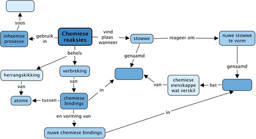</figure><p/>
<div class="teachers-guide"><figure id="gd-idp2314192">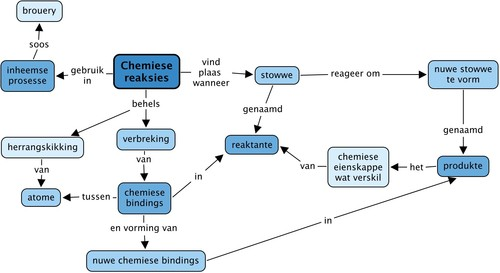</figure><p/>
</div>
<p/></div><div class="activity" data-type="Revision"><h1 class="title">Hersieningsvrae</h1>
<p/>
<div class="exercises"><div class="problemset"><div class="entry"><div class="problem">Veronderstel dat jy sommige van die chemikalie&#235; in 'n beker meng. Hoe sal jy weet of die reaksie plaasgevind het? Skryf 'n paragraaf wat elkeen van die tekens wat aandui dat die reaksie plaasgevind het verduidelik, en wat elke teken jou oor daardie reaksie vertel. [6 punte] 
<p/>

<p/><hr/><hr/><hr/><hr/><hr/><hr/></div><div class="solution">
<p/><p/>

        
<p>Leerder se antwoord moet al die punte hieronder bevat:</p>
        
        
<p>Ons weet dat 'n chemiese reaksie plaasgevind het wanneer een of meer van die volgende gebeur het:</p>

        <ul data-class="ListBulleted"><li>Daar was 'n kleurverandering in die reaksiefles.</li>
<li>'n Gas het gevorm. Gewoonlik weet ons dat 'n gas gevorm het wanneer ons borrels sien.</li>
<li>'n Vaste stof het gevorm. Gewoonlik weet ons dat 'n vaste stof gevorm het wanneer ons 'n modderige of troebel neerslag sien, of kristalle wat vorm.</li>
</ul><p>Nie-sigbare tekens wat ons help om te weet of daar 'n reaksie plaasgevind het of nie, sluit in:</p>

        <ul data-class="ListBulleted"><li>Soms kan chemiese veranderinge deur die reuksintuig waargeneem word, veral as 'n nuwe stof met 'n skerp reuk vrygestel word.</li>
<li>Ander chemiese reaksies kan gevoel word, byvoorbeeld wanneer die reaksie veroorsaak dat hitte vrygestel word.</li>
<li>Sommige chemiese veranderinge kan gehoor word, byvoorbeeld wanneer 'n ontploffing plaasvind.</li>
</ul><p/>
</div></div><div class="entry"><div class="problem">Skryf jou eie definisie neer van wat 'n reaktant is. [1 punt] 
<p/>

<p/><hr/><hr/></div><div class="solution">
<p/><p>Leerders moet noem dat die reaktante daardie stowwe is wat teenwoordig is voordat chemiese reaksies plaasvind. Hulle reageer om die produkte te vorm.</p>
</div></div><div class="entry"><div class="problem">Skryf jou eie definisie neer van wat 'n produk is. [1 punt] 
<p/>

<p/><hr/><hr/></div><div class="solution">
<p/><p>Leerders moet noem dat die produkte daardie stowwe is wat vorm tydens die chemiese reaksie. Hulle is teenwoordig aan die einde van die chemiese reaksie.</p>
</div></div><div class="entry"><div class="problem">Verduidelik wat met die bindings tussen die atome in die reaktante en produkte tydens 'n chemiese reaksie gebeur. [2 punte] 
<p/>

<p/><hr/><hr/></div><div class="solution">
<p/><p>Chemiese bindings tussen die atome in die reaktante breek en nuwe bindings vorm tussen atome in die produkte.</p>
</div></div></div></div>
<ol data-class="ListEnumerated"><li>
<p/>

<p>Metaangas (CH<sub>4</sub>) is 'n natuurlike brandstofgas wat in suurstofgas brand om koolstofdioksied en water te vorm. Die reaksie kan voorgestel word deur die volgende diagram:</p>

        <figure id="gd-idp7972448"></figure><table><tr><td><p><u>Sleutel</u>:</p>

                  
<p/>

                  
<p>Koolstofatome (C): swart</p>

                  
<p>Suurstofatome (O): rooi</p>

                  
<p>Waterstofatome (H): wit</p></td></tr></table><div class="exercises"><div class="problemset"><div class="entry"><div class="problem">Gebruik die diagram en die sleutel daaronder om formules vir elkeen van die stowwe in die reaksie te skryf. [4 punte]
<p/>
<table><tr><td><p><strong>Naam van verbinding</strong></p></td><td><p><strong>Formule</strong></p></td></tr><tr><td><p>Metaan</p></td><td><p/></td></tr><tr><td><p>Suurstofgas</p></td><td><p/></td></tr><tr><td><p>Koolstofdioksied</p></td><td><p/></td></tr><tr><td><p>Water</p></td><td><p/></td></tr></table></div><div class="solution">
<p/><p/>

        <table><tr><td><p><strong>Naam van verbinding</strong></p></td><td><p><strong>Formule</strong></p></td></tr><tr><td><p>Metaan</p></td><td><p>CH<sub>4</sub></p></td></tr><tr><td><p>Suurstofgas</p></td><td><p>O<sub>2</sub></p></td></tr><tr><td><p>Koolstofdioksied</p></td><td><p>CO<sub>2</sub></p></td></tr><tr><td><p>Water</p></td><td><p>H<sub>2</sub>O</p></td></tr></table><p/>
</div></div><div class="entry"><div class="problem">Wat is die reaktante in die bostaande reaksie? [2 punte] 
<p/>

<p/><hr/></div><div class="solution">
<p/><p>Metaan (CH<sub>4</sub>) en suurstof (O<sub>2</sub>)</p>
</div></div><div class="entry"><div class="problem">Wat is die produkte in die bostaande reaksie? [2 punte] 
<p/>

<p/><hr/></div><div class="solution">
<p/><p>Water (H<sub>2</sub>O) en koolstofdioksied (CO<sub>2</sub>)</p>
</div></div><div class="entry"><div class="problem">Skryf die name van die reaktante en produkte onder die kleurvolle voorstellings van elk van die molekule neer. [2 punte]</div><div class="solution">
<p/><p/>
 
<p>Die vergelyking moet as volg wees: metaan + suurstof &#8594; koolstofdioksied + water.</p>
 
<p/>
</div></div></div></div>
</li>
</ol><ol data-class="ListEnumerated"><li>
<p/>

<p>Ammoniak (NH<sub>3</sub>) word gevorm vanuit waterstofgas en stikstofgas.</p>

	     <div class="exercises"><div class="problemset"><div class="entry"><div class="problem">
<p/>

<p>Teken een molekuul van elk van die stowwe in die reaksie in die volgende tabel. [3 punte]</p>

		 <table><tr><td><p><strong>Naam van verbinding</strong></p></td><td><p><strong>Diagram van een molekuul van die verbinding</strong></p></td></tr><tr><td><p>Waterstofgas, H<sub>2</sub></p></td><td><p/>

                  
<p/>

                  
<p/></td></tr><tr><td><p>Stikstofgas, N<sub>2</sub></p></td><td><p/>

                  
<p/>

                  
<p/>

                  
<p/></td></tr><tr><td><p>Ammoniak, NH<sub>3</sub></p></td><td><p/>

                  
<p/>

                  
<p/>

                  
<p/>

                  
<p/></td></tr></table></div><div class="solution">
<p/><p/>

        
<p>Die kleure wat hier getoon word is slegs 'n voorstel; wat belangrik is is dat atome van dieselfde tipe met dieselfde grootte en kleur voorgestel moet word, en dat die relatiewe groottes van die atome weerspie&#235;l moet word in dat die voorstelling van die H-atoom kleiner is as di&#233; van die N-atoom.</p>

        <table><tr><td><p><strong>Naam van verbinding</strong></p></td><td><p><strong>Diagram van een molekuul van die verbinding</strong></p></td></tr><tr><td><p>Waterstofgas, H<sub>2</sub></p></td><td><figure id="gd-idp1462944"></figure></td></tr><tr><td><p>Stikstofgas, N<sub>2</sub></p></td><td><figure id="gd-idp7350736"></figure></td></tr><tr><td><p>Ammoniak, NH<sub>3</sub></p></td><td><figure id="gd-idp11312336">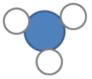</figure></td></tr></table><p/>
</div></div><div class="entry"><div class="problem">
<p/>

<p>Gebruik die templaat hieronder om jou diagramme wat die deeltjies voor en na die reaksie verteenwoordig, te teken. Jou diagram wys ook hoeveel van elke tipe deeltjie deelneem in die reaksie. [4 punte: 2 punte elk vir die 'voor' (linkerkantste) en 'na' (regterkantste) skets]</p>

        <figure id="gd-idp13410240"></figure></div><div class="solution">
<p/><p/>

        
<p>'n Voorbeeld van wat leerders moet lewer.</p>
 
        <figure id="gd-idp24287088">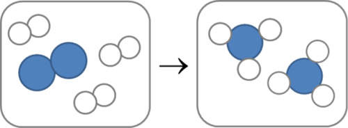</figure><p/>
</div></div><div class="entry"><div class="problem">Wat is die reaktante in die bostaande reaksie? [2 punte] 
<p/>

<p/><hr/></div><div class="solution">
<p/><p>Waterstof en stikstof.</p>
</div></div><div class="entry"><div class="problem">Wat is die produk van die reaksie hierbo? [1 punt] 
<p/>

<p/><hr/></div><div class="solution">
<p/><p>Ammoniak.</p>
</div></div></div></div>
</li>
</ol><div class="exercises"><div class="problemset"><div class="entry"><div class="problem">
<p/>

<p>Kyk na die volgende foto wat 'n proefbuis met melkerige water wys. Watter gas moet deur dit geborrel word om dit melkerig te maak? [1 punt]</p>

        <figure><figcaption class="caption">Kalkwater wat in die proefbuis melkerig geword het. <a href="http://www.flickr.com/photos/tessawatson/379270115/"> http://www.flickr.com/photos/tessawatson/379270115/ </a></figcaption></figure><p/><hr/></div><div class="solution">
<p/><p>Koolstofdioksied.</p>
</div></div><div class="entry"><div class="problem">Wat is die reaktante in hierdie chemiese reaksie? [1 punt]</div><div class="solution">
<p/><p>Kalkwater (kalsiumhidroksied) en koolstofdioksied.</p>
</div></div></div></div>

<p/>

<p>Totaal [32 punte]</p>
</div></div>
      </div></div>
